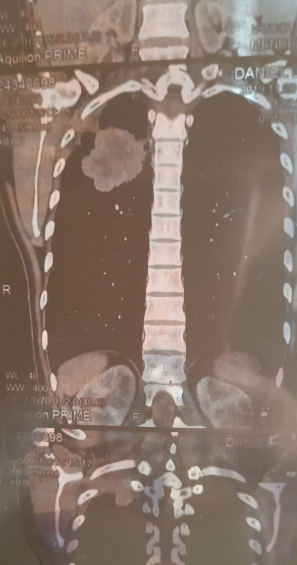

MI DIAGNÓSTICO FUE EL COMIENZO DE UNA RENACER
Cuando todo parecía perdido, elegí un camino diferente
El 19 de julio de 2019 recibí un diagnóstico que cambió por completo mi existencia:
un cáncer de pulmón con un tumor que no podía ser operado. Sentí miedo, incertidumbre
y muchas preguntas. Pero ese mismo día, sin saberlo, también comenzó el viaje más profundo
y transformador de mi vida.
Mientras seguía el tratamiento indicado por los médicos, asumí un compromiso profundo conmigo misma.
Me formé, aprendí, transformé hábitos, trabajé mis emociones, mis creencias y mi forma de vivir. Me
abrí
a nuevas herramientas que complementaron mi proceso y me enseñaron que el cuerpo necesita mucho más
que un tratamiento físico. El *16 de diciembre de 2020*,
los estudios confirmaron que el tumor había desaparecido. Hoy sigo completamente sana y dedico mi
vida a acompañar a otras personas desde esa experiencia.
"Nunca te identifiques con un diagnóstico. Sos mucho más que un resultado médico.
Tu capacidad de creer, aprender, transformar hábitos y abrirte a nuevos caminos también
forma parte de tu proceso."
Mi mayor aprendizaje fue descubrir que la fe también se fortalece cuando nos animamos a recorrer
caminos nuevos. Por eso quiero invitarte a no identificarte
con un diagnóstico ni permitir que otros definan tus límites. Confiá en vos, abrite a nuevas
posibilidades y recordá que no tenés que atravesar este camino en soledad.
Estoy acá para acompañarte, desde la experiencia y con todo mi cariño, para ayudarte a encontrar las
herramientas que impulsen tu bienestar y tu transformación
Quiero iniciar mi proceso

6+
Años de
Sanación Activa